Es el servicio de auditoría digital de Vistaguay que, mediante imágenes tomadas con
dron, detecta e
individualiza cada plántula para evaluar la calidad de la siembra y estimar pérdidas
tempranas de rinde.
Esto permite tomar decisiones correctivas a
tiempo
(como evaluar una resiembra o reajustar el plan de fertilización), además de auditar
contratistas,
verificar la calidad de la semilla y perfeccionar la calibración para próximos lotes.
Cultivos Compatibles y Ventana de Trabajo
Es compatible con Maíz y Girasol. El momento de
muestreo recomendado es
en estadios tempranos (como V2 o V3), o en
cualquier etapa
vegetativa donde las plantas ya estén bien definidas pero el cultivo aún no haya cerrado
el entresurco.
2
Impacto en el Rendimiento
¿Por qué es crucial auditar la emergencia?
El maíz y el girasol poseen una baja plasticidad: si una planta falta o nace atrasada,
las
plantas vecinas no logran compensar completamente esa pérdida. Detectar estas fallas a
tiempo te permite visibilizar el costo oculto de una mala siembra.
Desuniformidad Espacial
Refleja los errores de espaciamiento entre las plantas dentro del surco. Las
fallas son la principal causa de
pérdida, ya que
las plantas vecinas solo compensan entre un 19% y
47% del rinde. Por su parte, los dobles
golpes rinden solo el 80% por la competencia directa.
Desuniformidad Temporal
Mide las diferencias de tamaño o cobertura foliar entre las plantas. Las plantas
atrasadas sufren sombreado y compiten como malezas con el resto; con
desigualdades
mayores al 50%, el rinde cae hasta un 80% del
potencial del lote.
3
Indicadores de
Diagnóstico
Además de identificar cada planta individualmente, el algoritmo de Vistaguay las evalúa en
conjunto para ofrecer métricas reales sobre estos 3 indicadores fundamentales:
Densidad
A partir de la densidad objetivo deseada, auditamos la población real emergida
(plantas/ha) mediante el Coeficiente de
Logro para
cuantificar el porcentaje de éxito frente al stand esperado.
Espaciamiento
Mide la distancia en centímetros entre plantas consecutivas, cuantificando también
el
porcentaje de singulación. Identifica
distanciamientos irregulares como fallas o dobles golpes.
Cobertura
Mide el área foliar vista desde arriba (cm²/planta) para evaluar la uniformidad de
nacimiento. Permite detectar plántulas retrasadas que sufren dominancia por sus
vecinas.
4
Alcance del Servicio y
Variantes
Ofrecemos tres modalidades de análisis según el nivel de detalle y objetivo técnico que requiera
tu
lote o proyecto:
Siembra Fija
Auditoría comercial rápida para lotes de producción uniforme. Toma 1 foto cada 2
hectáreas en puntos de muestreo representativos.
• Siembra Fija y Variable: Entrega en
24 hs hábiles. Ante métricas atípicas, los
reportes
pasan por un control de calidad técnico adicional, el cual puede extender un poco su
momento de entrega.
• Ensayos y Semilleros: Tiempos
personalizados
según la complejidad del ortomosaico.
Esquema de Costos
• Siembra Fija y Variable: 1 USD por muestra
procesada.
• Ensayos y Semilleros: Cotización
personalizada según la cantidad de hileras a evaluar.
Para conocer detalles técnicos de captura de muestras, consultá nuestro
protocolo de vuelo
.
1
Capacidades por
Plataforma
La Plataforma Web centraliza la gestión técnica
completa
(como prescripción variable o subida masiva de fotos), mientras que la App Móvil está optimizada para la creación ágil de
solicitudes de vuelo o siembra fija directamente a campo.
Función / Característica
Plataforma Web
App Móvil
Solicitar Misión de Vuelo — Siembra Fija
Solicitar Misión de Vuelo — Siembra Variable
Requiere adjuntar
prescripción (.shp o .geojson)
(Solo en
Web)
Solicitar solo procesamiento (Siembra Fija o Variable)
Requiere
adjuntar tus propias fotos
(Solo en
Web)
Pago y Desbloqueo del Reporte Final
(Próximamente)
2
Acceso y Selección del
Lote
Desde la App Móvil
En la pantalla de inicio, presioná el botón verde flotante + Crear tarea.
Seleccioná la tarjeta Planting
Quality.
Elegí la Campaña, el Proyecto y el Lote a auditar.
Hacé clic en Iniciar formulario.
Desde la Plataforma Web
Navegá en el menú lateral izquierdo hasta seleccionar tu Campaña > Proyecto > Lote.
Una vez dentro del lote, en el panel izquierdo, hacé clic en el botón
+ Agregar.
Seleccioná la tarjeta Planting Quality /
Conteo de plantas.
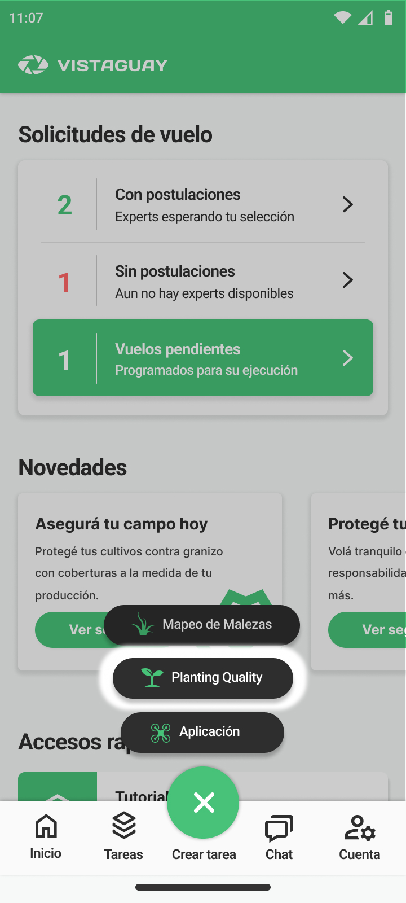
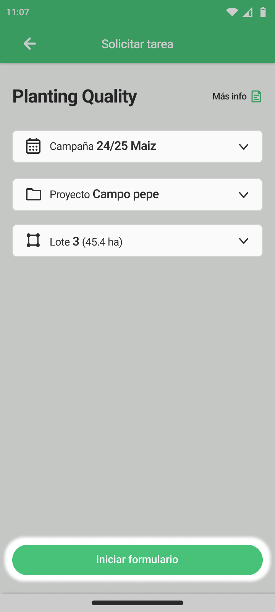
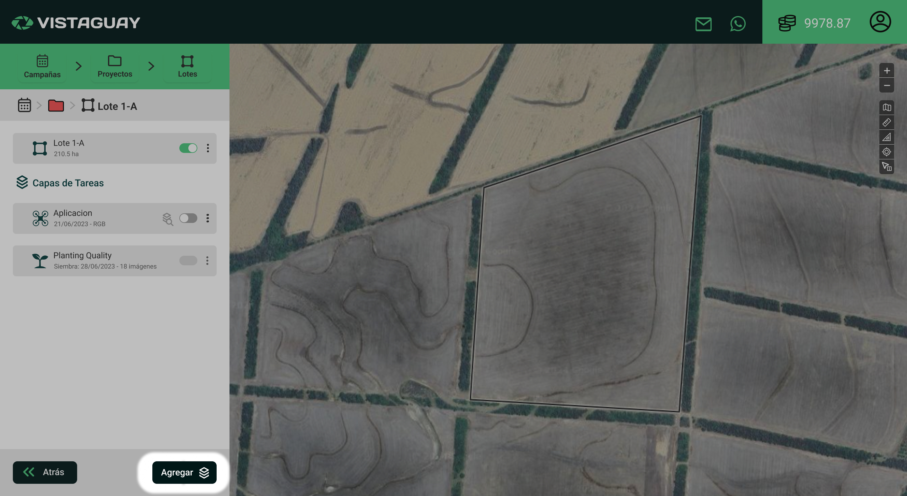
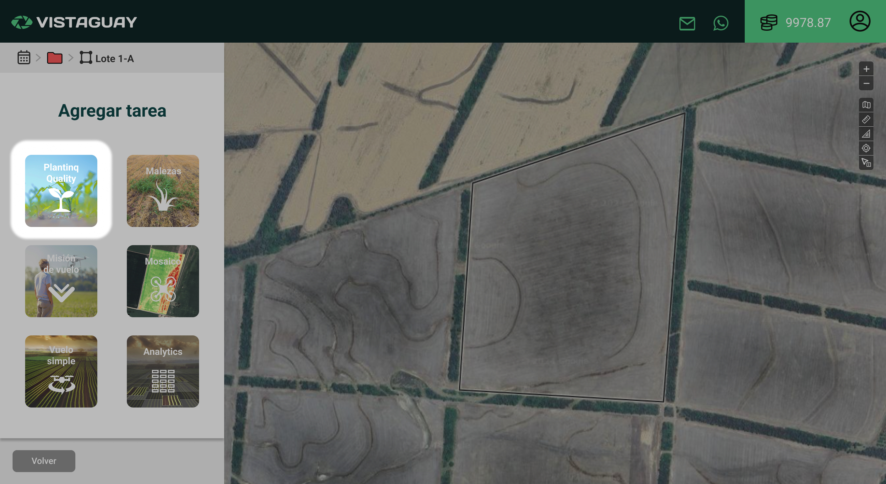
3
Selección de la Modalidad
de Trabajo
Al iniciar la solicitud, el primer paso es definir cómo vas a ejecutar la auditoría
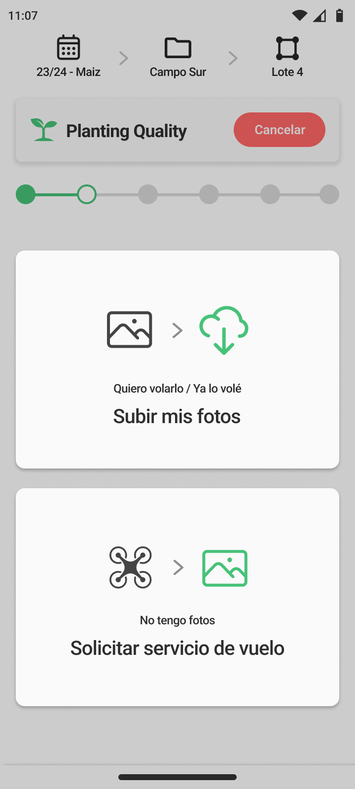
Subir mis fotos
Elegí esta opción si ya volaste el lote con tu propio dron. Al seleccionarla, la
App te indicará continuar el proceso desde la Plataforma Web.
Solicitar servicio
de vuelo
Elegí esta opción si preferís delegar la captura a un Expert. Desde la App Móvil podés
solicitar vuelos exclusivamente para Siembra
Fija.
4
Formulario Técnico del
Cultivo
La recolección de parámetros es idéntica tanto en la App
Móvil como en la Plataforma Web. En el visor paso a paso verás resaltados los
campos obligatorios necesarios para configurar la
tarea.
Con Solicitud de
Vuelo
A los datos generales se suman la fecha de
vuelo deseada y la forma de
pago para coordinar y licitar
la tarea con los pilotos certificados.
Sin Solicitud de
Vuelo (Fotos Propias)
Si definiste subir tus propias fotos, además de los datos generales se
habilita la subida directa de las
fotografías de dron (.jpg).
Solicitud
Vuelo
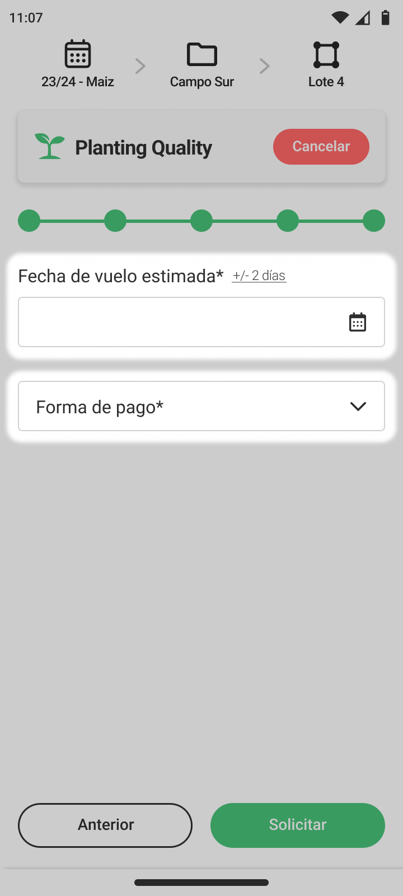
Fotos
Propias
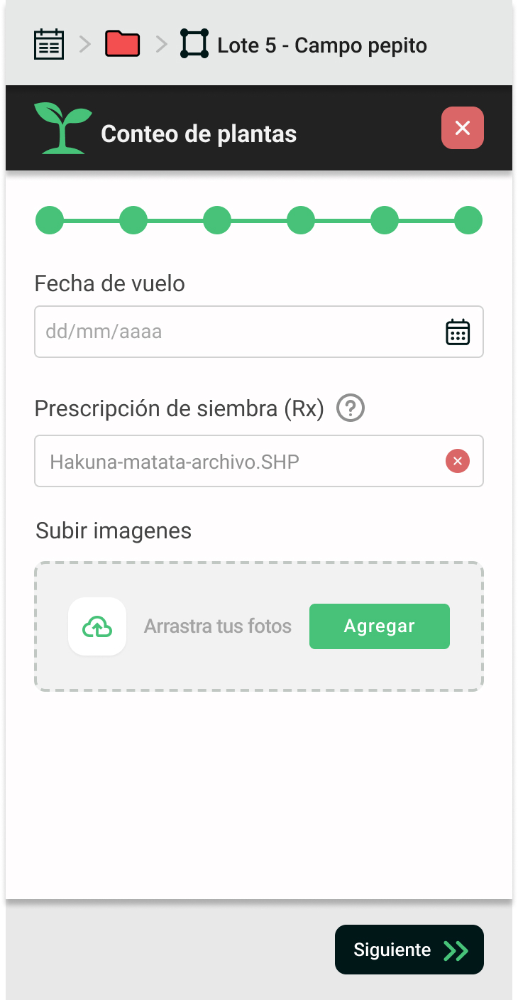
5
Gestión y Postulaciones
de Servicio de Vuelo
Si en la modalidad de trabajo elegiste Solicitar servicio de
vuelo, la plataforma activará la búsqueda de pilotos profesionales de la red
Vistaguay más cercanos a tu lote.
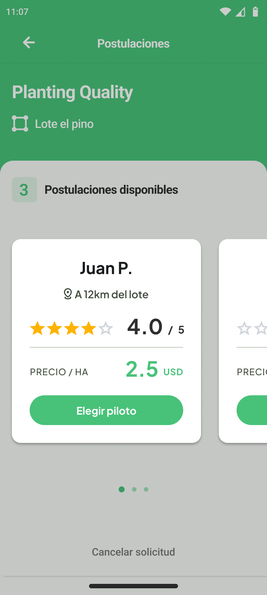
1
Postulaciones y
Selección
Recibirás notificaciones en tu App a medida que los pilotos se postulen. Podrás
comparar sus propuestas evaluando cotización
($/ha), calificación
(estrellas) y distancia al
lote.
2
Ubicación y Chat Directo
Al elegir a tu piloto, el sistema le compartirá el kml del lote (para planificar
el vuelo) y la ruta hacia el mismo. Además, se abrirá un chat
directo para coordinar detalles del vuelo.
3
Ejecución y Control de
calidad
Finalizado el vuelo, se cierra el contrato y el piloto subirá las tomas
capturadas, las cuales pasarán por un filtro de
calidad para asegurar datos confiables.
6
Prescripción, Carga de
Fotos y Validación
1. Carga de Prescripción
Si tu lote es de Siembra Variable, debés adjuntar tu mapa de prescripción en formato .shp o
.geojson para poder analizar individualmente cada
ambiente segun su densidad objetivo deseada.
Lectura Automática de Densidades
Al cargar tu archivo de prescripción, si
la tabla de atributos ya contiene una columna con la población asignada a cada zona, la
herramienta Autocompletar leerá el archivo y
rellenará la tabla de ambientes automáticamente.
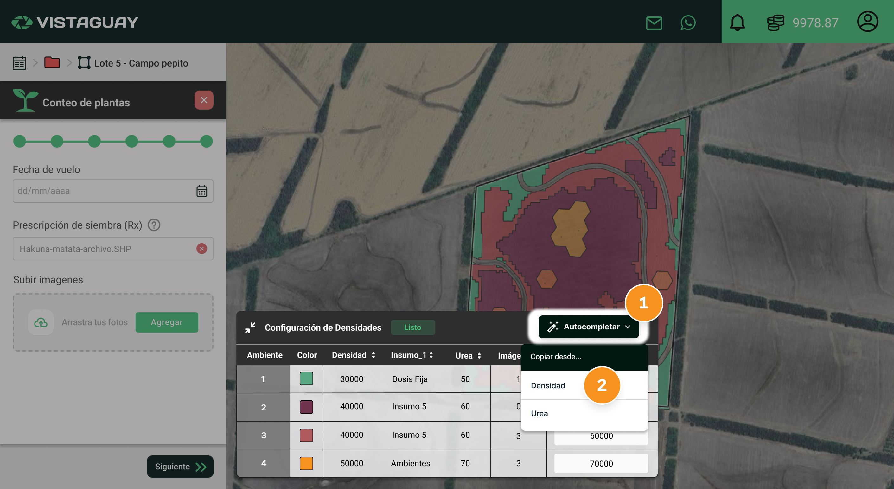
2. Carga e Inspección de Fotografías de Dron
Una vez que seleccionás o arrastrás tus imágenes .jpg, debés hacer clic en el botón "Subir y analizar". En ese momento, cada fotografía pasa
por un filtro de control de calidad que evalúa parámetros técnicos clave (como
nitidez, altitud, ángulo y coordenadas GPS).
Marcadores en el Mapa y Estado
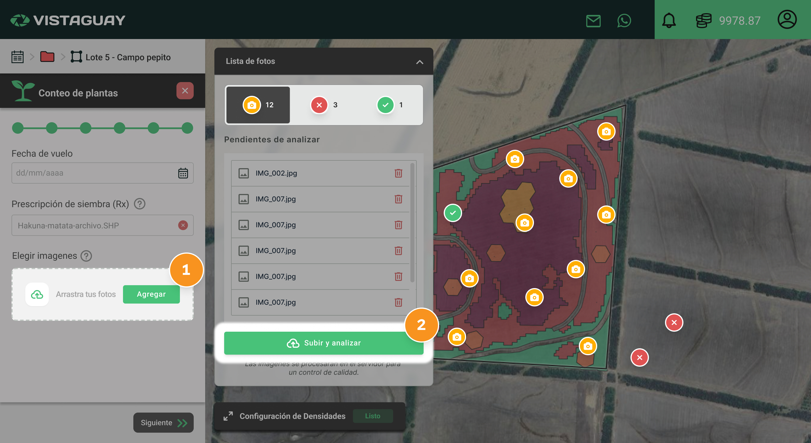
Fotos Pendientes
Capturas seleccionadas en espera. Debés hacer clic en "Subir y analizar" para iniciar la
validación.
Fotos No Aprobadas
Desestimadas por estar fuera del lote/prescripción, falta de GPS, ángulo
inclinado, foco o altura incorrecta (~24 surcos).
Fotos Validadas
Aprobadas por el control de calidad. Son las únicas tomas que se procesarán para
calcular la densidad y métricas del lote.
Condiciones para Finalizar
•
No debe quedar ninguna foto en estado pendiente, todas las
imágenes deben estar subidas y
analizadas para poder avanzar.
•
Las imágenes no aprobadas por el control
de
calidad o por estar fuera del
lote/prescripción no
impiden finalizar el proceso de solicitud ya que no serán tenidas en cuenta en
el análisis.
•
Si el
botón de finalizar no se habilita, revisá la sección de fotos rechazadas.
Las imágenes
que no pudieron subirse al servidor (por problemas de red o del sistema)
contarán
con un botón de "Reintentar" para
iniciar la
carga nuevamente.
6
Notificación,
Liquidación
y Desbloqueo
Al finalizar el análisis, recibirás una notificación por correo electrónico indicando
que tu
reporte está listo. Desde la Plataforma Web podrás acceder al desglose del costo del
servicio. Una vez que cuentes con saldo, podrás presionar
Pagar y Finalizar para liberar los
resultados.
Sin Saldo
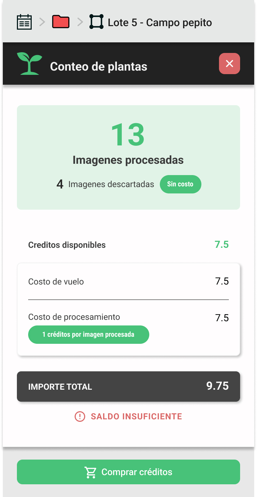
Con Saldo
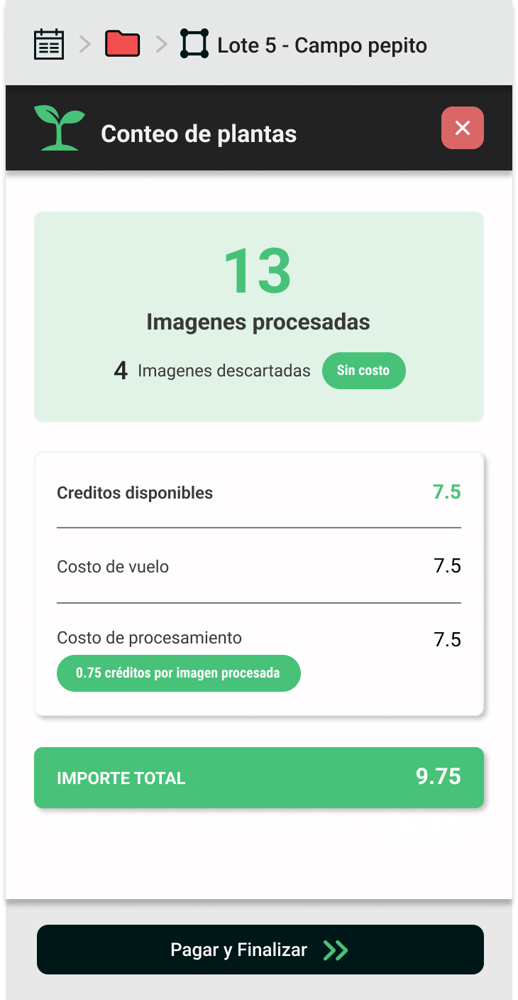
Desglose Transparente de Costos
En el resumen verás siempre discriminados el Costo
de procesamiento y el
Costo de vuelo (solo en
caso
de haber solicitado piloto).
Atajo Directo para Comprar
Créditos
En caso de tener créditos insuficientes, la plataforma te brindará un botón
directo
para Comprar créditos por
el
monto exacto faltante.
Visualización y Descarga de Resultados
1. Acceso Inmediato en el Mapa: Al presionar
Pagar y Finalizar, la plataforma
libera los resultados. Para visualizarlos sobre el lote, el botón de activación
(switch) de la tarjeta de la tarea debe estar encendido.
2. Descargas y Reporte Interactivo: Para
descargar los resultados, hacé clic en los tres
puntos de la tarjeta de la tarea y seleccioná el tercer
ícono. Si deseás acceder al reporte web interactivo, debés hacer clic en el
segundo ícono de ese mismo
menú.
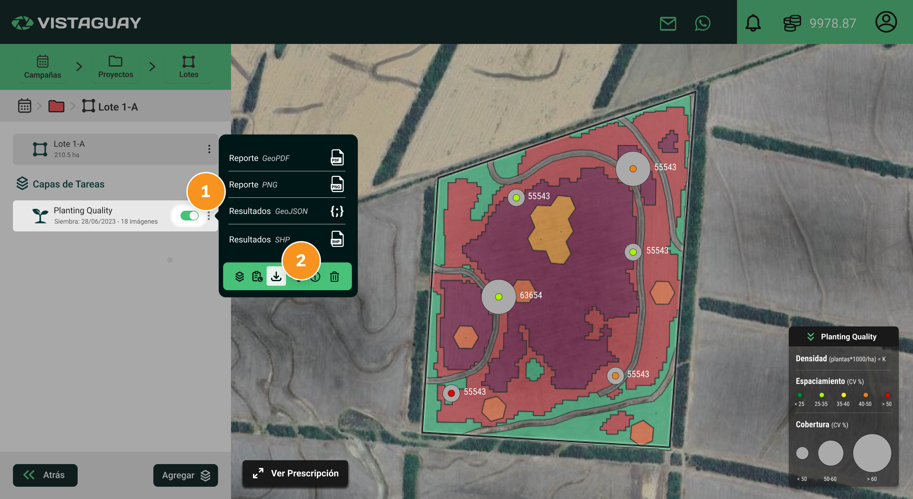
1
Entregables del
servicio
Vistaguay entrega los resultados de tu auditoría de siembra en tres formatos de acceso según
tus
necesidades operativas:
Reporte PDF
Documento descargable y estático que incluye el resumen ejecutivo con tablas
estadísticas consolidadas, histogramas de frecuencia y la foto de la muestra
crítica.
Plataforma Web (Interactiva)
Entorno digital para navegar el lote sobre el mapa satelital, auditar el detalle
de
cada muestra y acceder a las herramientas analíticas avanzadas.
Capas Vectoriales (GIS)
Exportación de los puntos de muestreo en formatos Shapefile
(.shp) y GeoJSON (.geojson)
con
su
tabla de atributos
completa.
2
Cómo visualizarás tus
resultados en la plataforma
Al finalizar el procesamiento de tu auditoría, tendrás acceso a un mapa interactivo que
centraliza toda la información relevada a campo:
>>
Lote
Lote
68.20 ha
Planting Quality
Siembra:
16/09/202526 Imágenes
cargadas
DJI_0575...
Densidad
68926 pl/ha
Promedio
Desvío est.
Coef. var.
Espaciamiento
27.53
10.48
38.08
Cobertura
28.68
9.54
33.27
Planting
Quality
Densidad[Plantas/ha]
Espaciamiento[CV (%)]
≤
25
25-35
35-40
40-50
>
50
− Prescripción
Siembra
Variable
Clase
Color
AX7761VT3P
Densidad obj. (pl/ha)
0
71000
64000
1
71000
64000
2
71000
64000
3
78000
72000
4
86000
77000
Fotografías Descartadas
(2)
Protocolo
DJI_0488.JPG
Ángulo de cámara >
15°
Ver
DJI_0512.JPG
Desviación altura >
10%
Ver
Detalle de muestra
Cada punto en el mapa representa una muestra (foto). Al hacer clic sobre
cualquier
punto, podrás consultar las estadísticas detalladas de esa captura y ver la
fotografía original.
Leyenda de muestreo
Panel desplegable con el resumen de la simbología visual aplicada a cada muestra
del
lote (densidad, espaciamiento y cobertura).
Prescripción
Disponible en siembra variable, te permite consultar y desplegar la tabla de
ambientes para comparar la densidad prescripta versus la población real
emergida.
Imágenes descartadas
Dispondrás de un botón donde, en caso de que el sistema haya detectado
fotografías
fuera de protocolo de vuelo, podrás consultar cuáles fueron y la causa puntual
de su
descarte.
3
Simbología y lectura
visual en el mapa
Cada punto sobre el mapa satelital comunica 3 capas de diagnóstico de manera simultánea:
Ejemplo
en
mapa
53K
Densidad
Texto impreso sobre el punto. Muestra la población calculada en miles de plantas
por
hectárea para cada foto puntual (ejemplos: 53K,
72K,
46K).
Espaciamiento
Círculo de color. Representa qué tan uniforme es el espaciamiento entre las
plantas
dentro del surco. Los colores evalúan la calidad de la distribución: mientras más cercano al verde, más uniforme es el
espaciamiento; mientras más rojo, mayor es la presencia de fallas o
dobles golpes.
Cobertura
Círculo gris. El tamaño del círculo representa el área foliar promedio y la
uniformidad del nacimiento. Mientras más grande
sea
el círculo, mayor es la variabilidad o desigualdad en el tamaño de las
plántulas detectadas.
4
Lectura de tablas
y
gráficos
Los resultados consolidados del lote y de cada ambiente se estructuran utilizando los tres
indicadores principales a través de sus tablas y gráficos estadísticos asociados. En lotes
de
siembra fija se presenta una tabla y un gráfico por indicador, mientras que en siembra
variable
se realiza un análisis puntual desglosado por cada ambiente.
Densidad (pl/ha)
Compara la población objetivo (OBJ)
con
la real lograda (Promedio X̄ y
Mediana
Me), calculando el Coeficiente de Logro (LOG %) para medir
el
éxito del nacimiento.
Espaciamiento (cm)
Evalúa la precisión en la hilera mediante el Desvío
Estándar (DS), el Coeficiente de
Variación
(CV %) y el
porcentaje de Singulación (SIN %).
Cobertura (cm²)
Mide el área foliar promedio vista desde arriba y su Coeficiente de Variación (CV %) para
determinar la uniformidad temporal del cultivo.
Al cargar tu archivo de prescripción (.shp), si la tabla de
atributos ya contiene una columna con la población asignada a cada zona, presioná el botón 🪄 Autocompletar. El sistema leerá el archivo y rellenará la tabla
de ambientes automáticamente.